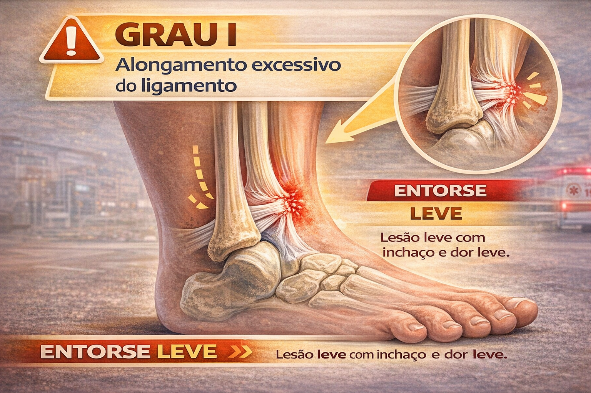
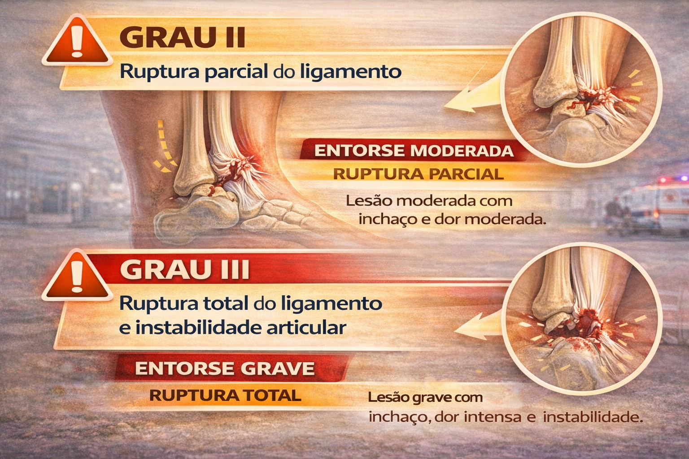
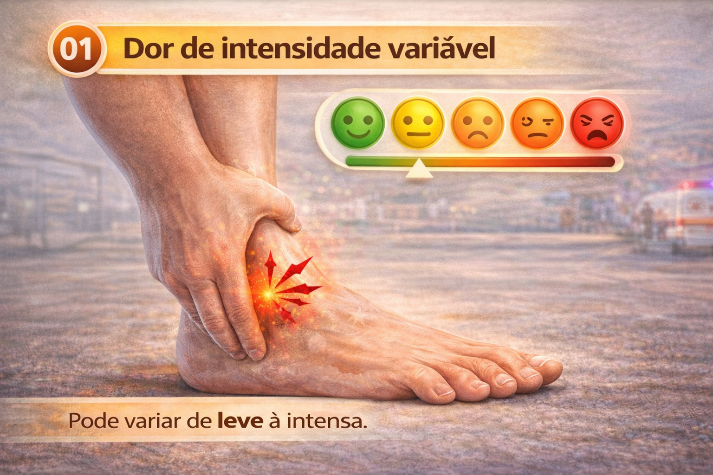
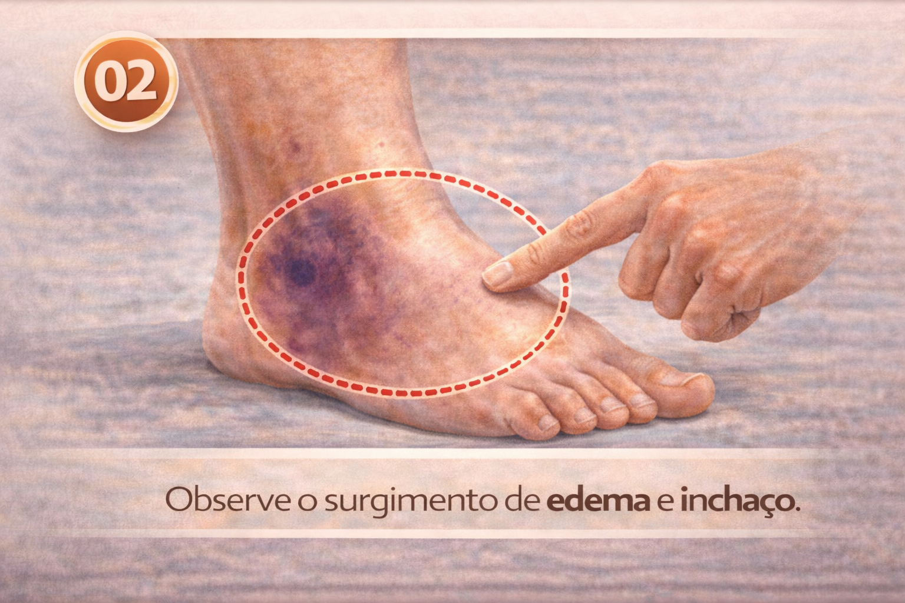
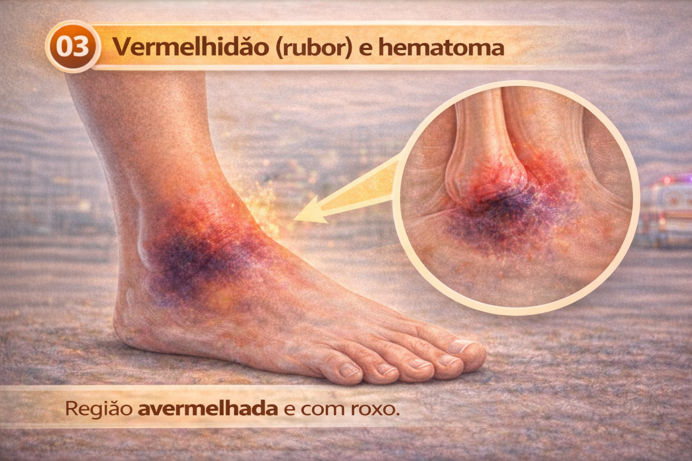
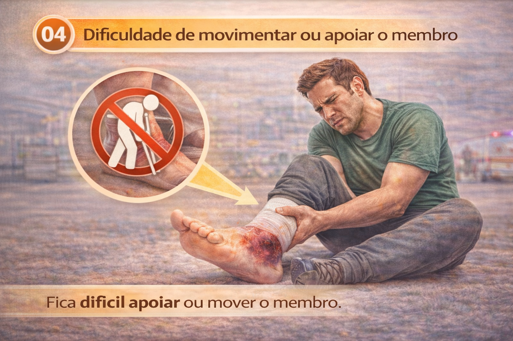
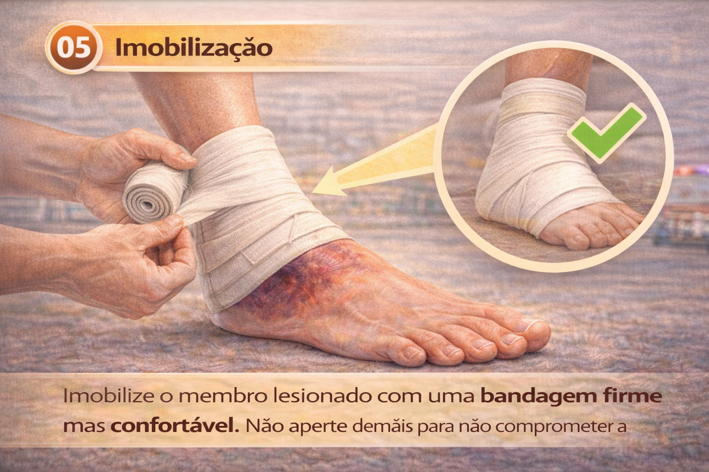
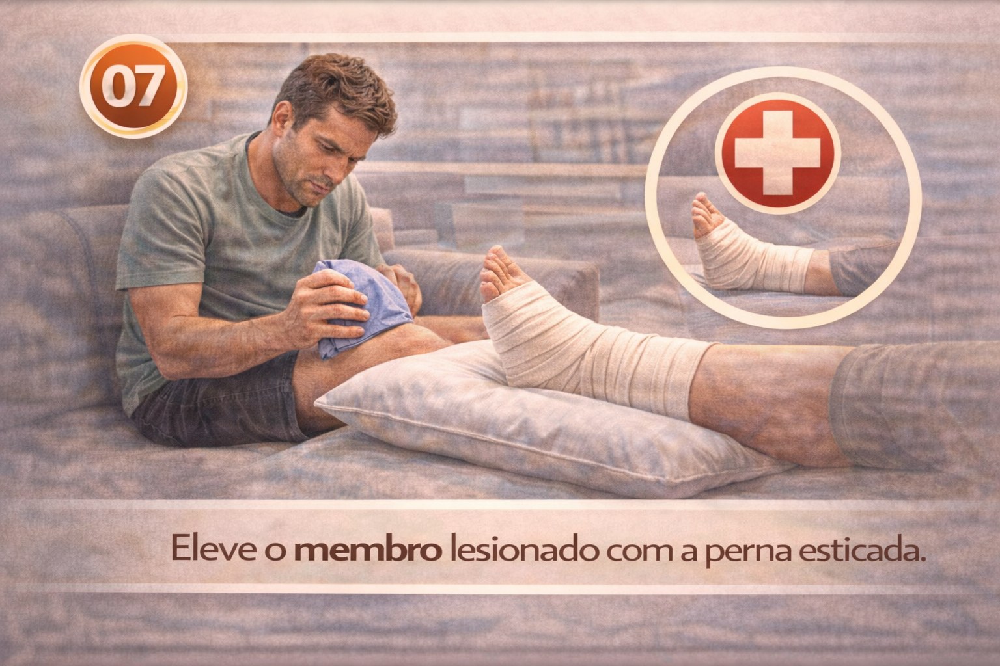
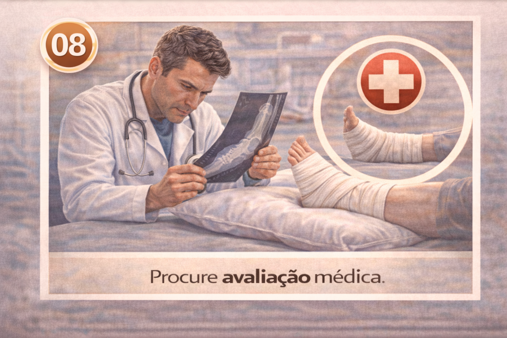

O que é entorse?
Entorse é uma lesão dos ligamentos de uma articulação causada por movimento além do limite normal. Pode provocar dor, inchaço, hematoma e dificuldade para apoiar ou movimentar o membro.


Sinais e sintomas
- Dor de intensidade variável.
- Inchaço e hematoma.
- Dificuldade para movimentar ou apoiar.
- Sensibilidade local.




O que fazer
- Interrompa a atividade dolorosa e proteja o membro de novos movimentos.
- Frio local: aplique bolsa fria ou gelo envolto em pano por até cerca de 20 a 30 minutos por aplicação, sem contato direto do gelo com a pele.
- Compressão: bandagem elástica pode ser usada para conforto e controle do edema, desde que não comprometa circulação ou sensibilidade.
- Elevação: pode ser utilizada para conforto e redução do inchaço, desde que a posição não aumente a dor.
- Procure avaliação quando houver incapacidade de apoiar/mover, dor importante, deformidade, piora ou dúvida de fratura.



O que não fazer
- Não force a pessoa a apoiar ou movimentar o membro.
- Não faça bandagem apertada a ponto de causar dormência, palidez ou piora da dor.
- Não use calor como regra automática após 24 horas; a conduta posterior depende da evolução e da avaliação adequada.
- Não retorne a esporte ou atividade intensa antes da recuperação.
Prevenção
- Utilize calçados adequados.
- Faça fortalecimento e aquecimento apropriados.
- Mantenha áreas de circulação livres e seguras.
- Tenha atenção a pisos irregulares ou escorregadios.
Referência de atualização: American Heart Association / American Red Cross — 2024 Guidelines for First Aid.